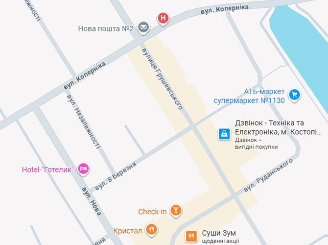

Counter-Strike 2
Counter-Strike 2 – це командний шутер від першої особи, де гравці протистоять один одному в режимах «терористи проти спецназу», виконують завдання та змагаються за перемогу в раундах.
Dota 2
Dota 2 – це багатокористувацька онлайн-гра жанру MOBA, де дві команди по п’ять героїв борються за знищення бази суперника, використовуючи унікальні здібності та стратегічну командну гру.
PUBG: BATTLEGROUNDS
PUBG: Battlegrounds – це багатокористувацька королівська битва, де до 100 гравців висаджуються на острів, збирають зброю та спорядження й борються за виживання до останнього.
Відгуки
Counter-Strike 2 — це як взяти старий добрий CS:GO, покласти його в блендер з галюциногенами, посипати «новим движком» і потім випустити.новим рухом», а потім випустити його у світ під гаслом «Ми все чинили! (ні)». Це гра, де ви або 20-річний ветеран з рефлексами гепарда, або мішок кісток, який навіть з AWP у руці примудряється програти перестрілку з пістолета за нульовий заряд. Ласкаво просимо до цифрового дарвінізму, де ваша майстерність вимірюється не годинами, а кількістю зламаних моніторів.
"Ігронавти" в контексті Dota 2 зазвичай стосується української команди "Team Hryvnia". Вони є українською командою, яка з'явилась у 2023 році та брала участь у різних турнірах, зокрема, в European Pro League. На "Світових таблицях лідерів" у Дота 2 можна знайти гравців з різних дивізіонів.
Де нас знайти?
Адреса
https://www.google.com/